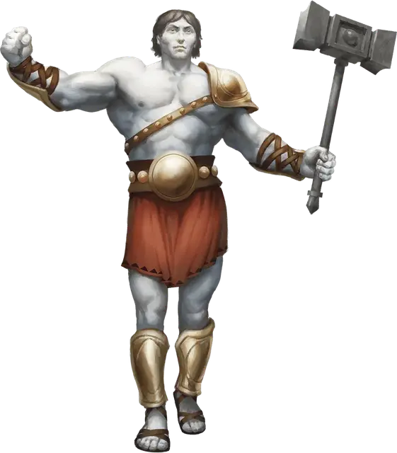

Эмпирей
Empyrean
Огромный Небожитель (Титан), хаотично-добрый

Класс Доспеха 22 (природный доспех)
Хиты 313 (19к12 + 190)
Скорость 50 футов, плавая 50 футов, летая 50 футов
| мод | спас | ||
|---|---|---|---|
| СИЛ | 30 | +10 | +17 |
| ЛОВ | 21 | +5 | +5 |
| ТЕЛ | 30 | +10 | +10 |
| мод | спас | ||
|---|---|---|---|
| ИНТ | 21 | +5 | +12 |
| МДР | 22 | +6 | +13 |
| ХАР | 27 | +8 | +15 |
Навыки Проницательность +13, Убеждение +15
Иммунитет к урону дробящий, колющий, рубящий от немагических атак
Чувства истинное зрение 120 футов, пассивное Восприятие 16
Языки Все
Опасность 23 (50000 опыта)
Бонус мастерства +7
Особенности
Врождённое колдовство. Базовой характеристикой эмпирея является Харизма (Сл спасброска от заклинания 23, +15 к попаданию атаками заклинаниями). Он может накладывать следующие заклинания, не нуждаясь в материальных компонентах:
• Неограниченно: бесследное передвижение [pass without trace], высшее восстановление [greater restoration], подводное дыхание [water breathing], хождение по воде [water walk];
• 1/день каждое: землетрясение [earthquake], общение [commune], огненная буря [fire storm], рассеивание зла и добра [dispel evil and good], уход в иной мир [plane shift] (только на себя).
Легендарное сопротивление (3/день). Если эмпирей проваливает спасбросок, он может вместо этого сделать спасбросок успешным.
Сопротивление магии. Эмпирей совершает с преимуществом спасброски от заклинаний и прочих магических эффектов.
Магическое оружие. Атаки оружием эмпирея являются магическими.
Действия
Молот. Рукопашная атака оружием: +17 к попаданию, досягаемость 10 футов, одна цель. Попадание: Дробящий урон 31 (6к6 + 10). Если цель — существо, она должна преуспеть в спасброске Телосложения Сл 15, иначе станет ошеломлённой до конца следующего хода эмпирея.
Снаряд. Дальнобойная атака заклинанием: +15 к попаданию, дистанция 600 футов, одна цель. Попадание: Урон 24 (7к6) одного из следующих видов (на выбор эмпирея): звук, излучение, кислота, огонь, силовое поле, холод или электричество.
Легендарные действия
Эмпирей может совершить 3 легендарных действия, выбирая из представленных ниже вариантов. За один раз можно использовать только одно легендарное действие, и только в конце хода другого существа. Эмпирей восстанавливает использованные легендарные действия в начале своего хода.
Атака. Эмпирей совершает одну атаку.
Поддержка. Эмпирей приободряет всех невраждебных существ в пределах 120 футов от себя до концов их следующих ходов. Приободрённые существа до конца следующего хода эмпирея не могут быть очарованными и напуганными, а также совершают с преимуществом проверки характеристик и спасброски.
Сотрясающий удар (стоит 2 действия). Эмпирей бьёт молотом по полу, вызывая сотрясение. Все остальные существа, находящиеся в контакте с полом, и находящиеся в пределах 60 футов от эмпирея, должны преуспеть в спасброске Силы Сл 25, иначе будут сбиты с ног.
Описание
Эмпиреи — это дети-небожители богов с Верхних Планов. Они невероятно красивы, статны и самоуверенны.
Проявление эмоций. Эмпиреи могут испытывать приступы божественного спокойствия или ярости. Их настроение может влиять на окружающую среду. Когда эмпирей несчастен, тучи могут заплакать солёной водой, полевые цветы окрестных лугов завянут, к берегу озера может прибить мёртвую рыбу, а деревья в ближайших лесах начнут сбрасывать листву. Когда эмпирей радуется, за ним повсюду следует солнечный свет, маленькие животные резвятся в его следах, а птицы наполняют небо радостными песнями.
Злые эмпиреи. Некоторые эмпиреи обратились к злу, после того как спустились на Нижние Планы, или из-за проклятия злых богов. Злой эмпирей не может долго существовать на Верхних Планах и, как правило, сбегает на Материальный План, где он может властвовать над царством смертных, как неукротимый тиран.
Бессмертные титаны. Эмпиреи не стареют, но могут быть убиты. Немногие эмпиреи могут представить свою смерть, поэтому в бою они сражаются бесстрашно, отказываясь верить в свой конец, даже находясь на пороге смерти. Когда эмпирей умирает, его дух возвращается на свой родной план, где один из его родителей воскрешает его, если только у родителя нет веских причин не делать этого.